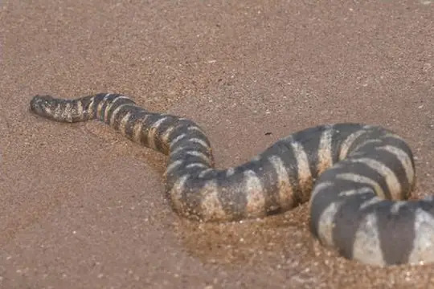

Acrochordus
The genus Acrochordus (family Acrochordidae) has 5 species in SnakeList (none venomous), recorded in 10 countries.
- 5species
- 5non-venomous
- 10countries
About the genus
A genus of the family Acrochordidae (file snakes).
Species
Showing 5 species
 FilesnakeAcrochordus arafurae
FilesnakeAcrochordus arafurae Javan File SnakeAcrochordus javanicus
Javan File SnakeAcrochordus javanicus
Wart SnakeAcrochordus granulatus- Known from fossilsAcrochordus dehmi
- No photo yetAcrochordus dubius
No snakes in Acrochordus match.